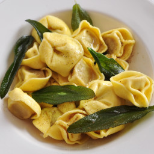

Tortellini Pasta Recipe

A speedy pasta salad with Mediterranean flavours - perfect for packed lunches
Tortellini are pasta originally from the Italian region of Emilia (in particular Bologna and Modena). Traditionally they are stuffed with a mix of meat
Ingredients Required
- 8 cherry tomatoes, halved
- 1 tbsp balsamic vinegar
- 2 tbsp toasted pine nuts
- 3 tbsp pesto (fresh if you can get it)
- 250g fresh tortellini
- 40g Tenderstem broccoli, cut into short lengths
Steps
- Bring a large pan of water to the boil. Add the broccoli, cook for 2 mins.
- Then add the tortellini and cook for 2 mins.
- Drain everything, gently rinse under cold water.
- Toss with the pesto, pine nuts and balsamic vinegar.
- Add the tomatoes, pack into containers and chill.
- Let the salad get to room temperature.